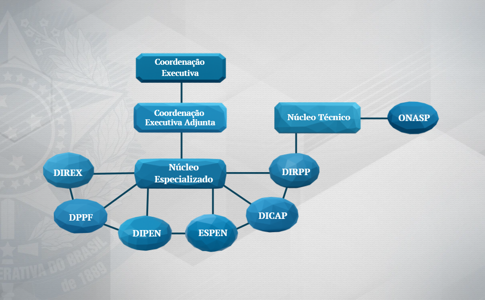
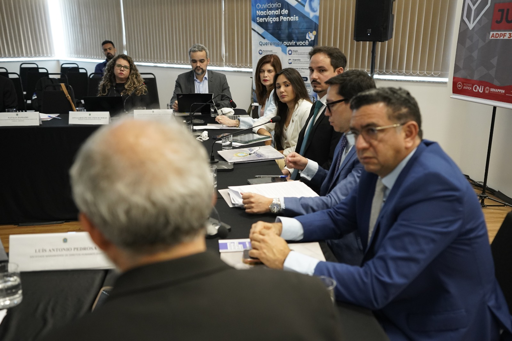
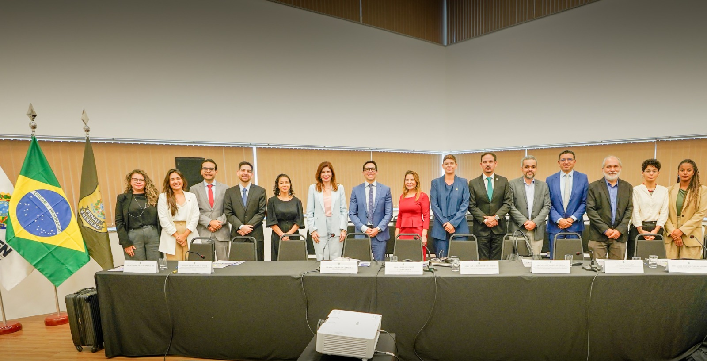
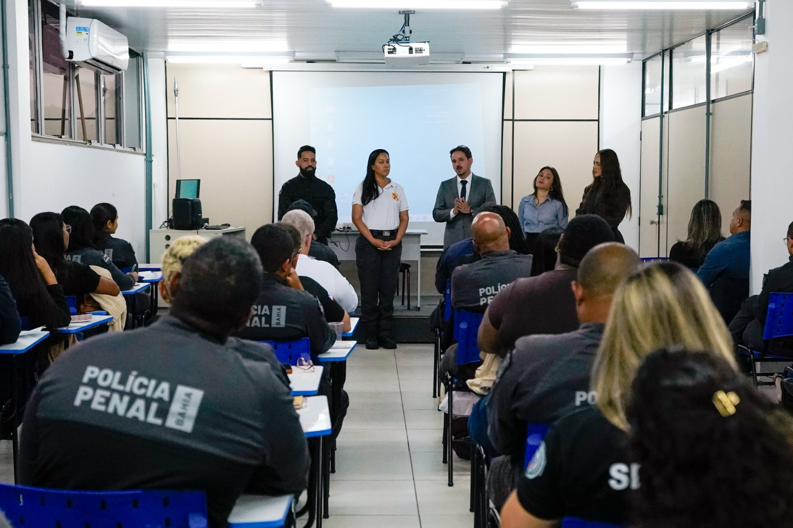
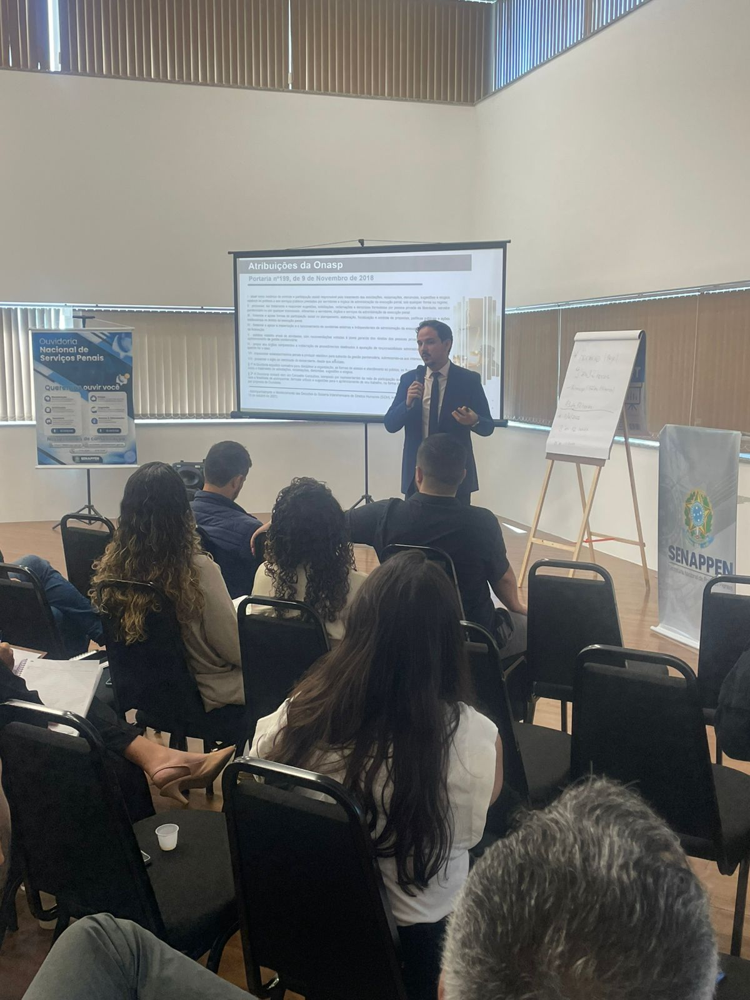

Conteúdo Técnico e Projetos Estruturantes
EMA - Senappen
Espaço da Equipe de Monitoramento e Acompanhamento das decisões e deliberações do Sistema Interamericano de Direitos Humanos em face do sistema penal nacional, dedicado a fortalecer o cumprimento das determinações do SIDH em parceria com as Unidades Federativas.
Institucional
A EMA-Senappen foi instituída, inicialmente, pela Portaria GABSEC/Senappen/MJSP Nº 350, de 13 de junho de 2024, em um esforço de integrar a Secretaria Nacional de Políticas Penais ao processo de cumprimento das decisões do SIDH, dado seu rol de competências, em especial, a previsão de prestar apoio técnico aos entes federativos quanto à implementação dos princípios e das regras da execução penal.
A estrutura da EMA foi alterada em 2025, mediante as Portarias GABSEC/Senappen/MJSP Nº 511, de 13 de outubro de 2025, e Portaria de Pessoal GABSEC/Senappen/MJSP Nº 93, de 10 de março de 2026, as quais possuíam por objetivo o aprimoramento da sua composição institucional, conforme o organograma a seguir:

Frentes de Atuação
- Monitorar e acompanhar as estratégias adotadas pelo Estado Brasileiro para o cumprimento das decisões do SIDH em relação ao sistema penal.
- Prevenir e evitar possíveis condenações.
- Propagar a cultura de Direitos Humanos, fomentando a aplicação dos Tratados Internacionais sobre a matéria de Direito Penal pelos gestores do sistema penal nacional.
- Fortalecer o diálogo entre a proteção de direitos e a governança no sistema penal.
Cabe citar a aproximação institucional e a construção de diálogo com órgãos-chave desse processo de monitoramento, como o Ministério das Relações Exteriores, o Ministério dos Direitos Humanos e da Cidadania e o Conselho Nacional de Justiça.
Decisões do SIDH
Consulte as subpáginas temáticas com sínteses públicas de decisões, medidas provisórias e medidas cautelares relacionadas ao sistema penal brasileiro no âmbito do Sistema Interamericano de Direitos Humanos.
Atuação institucional em 2025
Em 2025, a EMA/Senappen intensificou o acompanhamento do Sistema Interamericano de Direitos Humanos com foco em decisões, deliberações e medidas com repercussão sobre o sistema penal brasileiro. A atuação combinou articulação interinstitucional, monitoramento técnico e apoio à consolidação de respostas coordenadas do Estado.
Nesse período, a equipe ampliou sua participação em agendas voltadas ao acompanhamento de casos perante a Corte Interamericana de Direitos Humanos e ao fortalecimento de mecanismos permanentes de monitoramento no âmbito da política penal.


"Caso Pedrinhas"
Em 21 de outubro de 2025, a EMA-Senappen foi convocada a participar, juntamente a outros órgãos representantes do Estado Brasileiro, da audiência privada solicitada pela Corte Interamericana de Direitos Humanos sobre as Medidas Provisórias outorgadas no Caso do Complexo Penitenciário de São Luís, Maranhão (Caso Pedrinhas).
Como desdobramento da audiência, a Equipe ficou responsável por coordenar uma mesa de trabalho voltada à elaboração de um plano de cumprimento conjunto, com foco no enfrentamento das fragilidades ainda identificadas no Caso.
Eixos priorizados
- Superlotação e ambiência no sistema prisional.
- Dignidade e condições de custódia.
- Acesso à justiça e prevenção à tortura.
- Monitoramento, participação social e coordenação institucional.
Desdobramentos e articulação técnica
Entre novembro e dezembro de 2025, a EMA/Senappen contribuiu para a formalização da mesa de trabalho, participou de reuniões técnicas dedicadas aos eixos temáticos do caso e apoiou a preparação de visita técnica destinada a consolidar diagnósticos e orientar as próximas medidas.
No mesmo contexto, a equipe atuou de forma articulada com o Plano Pena Justa e acompanhou iniciativas voltadas à criação de instâncias permanentes de monitoramento e à padronização de fluxos para acompanhamento de casos internacionais com incidência sobre o sistema penal brasileiro.
Curso "Sistema Penal e Tutela Internacional de Direitos Humanos"
Como parte do objetivo de propagar a cultura de Direitos Humanos, fomentando a aplicação dos tratados internacionais sobre a matéria de Direito Penal pelos gestores do sistema penal nacional, a EMA-Senappen tem disponibilizado o curso "Sistema Penal e Tutela Internacional de Direitos Humanos". O curso foi idealizado pela própria equipe, com apoio e direcionamento da Escola Nacional de Serviços Penais, e aborda, entre os conteúdos, o funcionamento do Sistema Interamericano de Direitos Humanos, a aplicação dos direitos humanos na prática da atividade policial e a análise de casos do Brasil no âmbito do sistema interamericano, proporcionando uma visão teórica e prática sobre o tema.
O curso já foi disponibilizado para servidores da Senappen, da Secretaria de Estado de Administração Penitenciária da Bahia e da Secretaria de Estado da Administração Penitenciária do Maranhão, que possui estabelecimento penal acompanhado pelo SIDH. Até o momento, a iniciativa totaliza mais de 100 pessoas capacitadas e, especialmente no caso da SEAP/MA, o Escritório das Nações Unidas sobre Drogas e Crime atuou em parceria com a EMA para viabilizar a gravação do conteúdo e ampliar o alcance da formação entre os servidores do estado.

